列车向拉萨
青藏铁路 · 一段旅程如何开始
TRAVEL · WRITING · PHOTOGRAPHY
我的角色：作者、摄影与全书编排。从旅途记录到章节结构、文字校改和实体成书，独立完成这本 158 页旅行书。
九个章节沿青藏铁路进入拉萨，再到日喀则、珠峰、藏北与纳木措。书里有风景，也有人、历史、信仰和我当时没有答案的问题。

为什么写这本书
旅行结束后，我并不想让这些照片只停留在相册里。一路遇到的人、听到的故事、对宗教与历史的困惑，以及一些只在当时出现的感受，都值得被重新整理和理解。
因此，这本书不是景点清单，也不是单纯的摄影集。它沿着真实行程展开，把照片、见闻和思考放回当时的时间与空间，慢慢形成一条完整的叙事。
我想记录的，不只是看见了什么，也包括一路上对世界和自己的重新理解。
从旅程到书
不只选择最好看的画面，也选择能够推动故事、唤回细节的照片。
重新梳理行程、人物和事件，补充当时没有来得及写下的感受与理解。
让九个章节既遵循旅程，也各自拥有主题、情绪和回望。
反复校改文字、图片与版式，最终让一次旅行成为可以翻阅、保存和分享的作品。
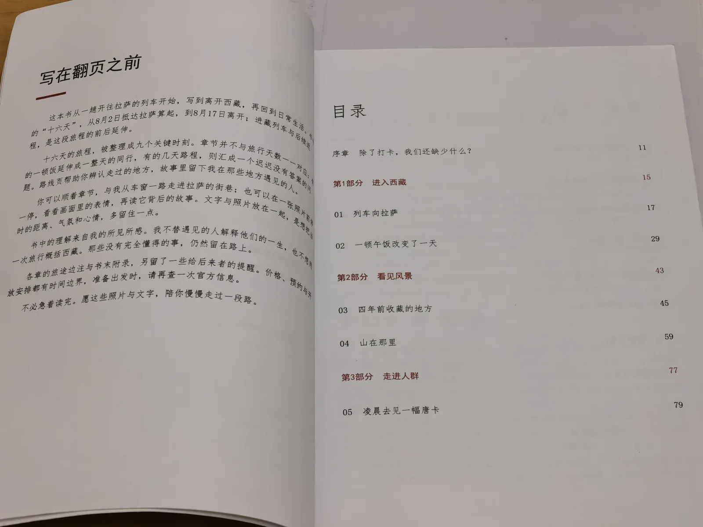
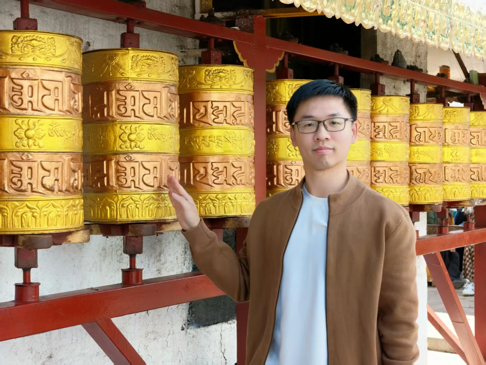
九章路线
青藏铁路 · 一段旅程如何开始
陌生城市里，人与人的偶然连接
抵达曾经只存在于屏幕里的远方
珠峰 · 风景抵达高峰以后
信仰、时间与一件被珍视的事
在历史与日常之间缓慢行走
面对相遇，也学习面对离开
藏北见闻与人的选择
离开西藏，也带走新的问题
书中选页
山不见我，我自去见山。
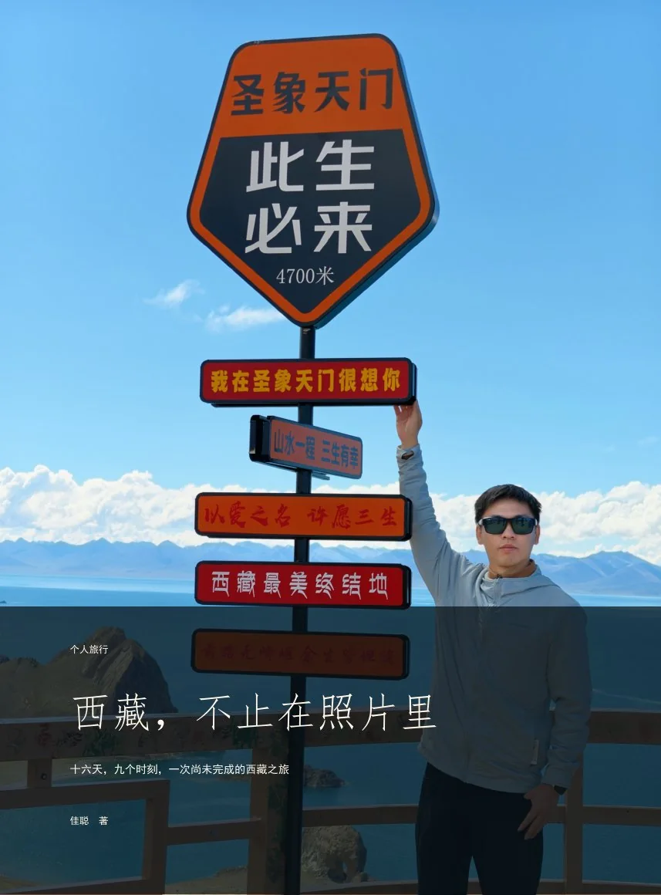
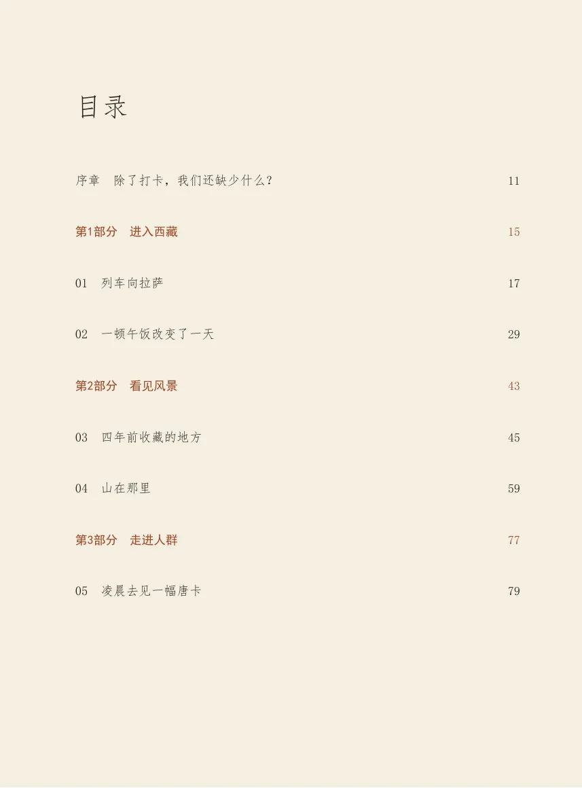
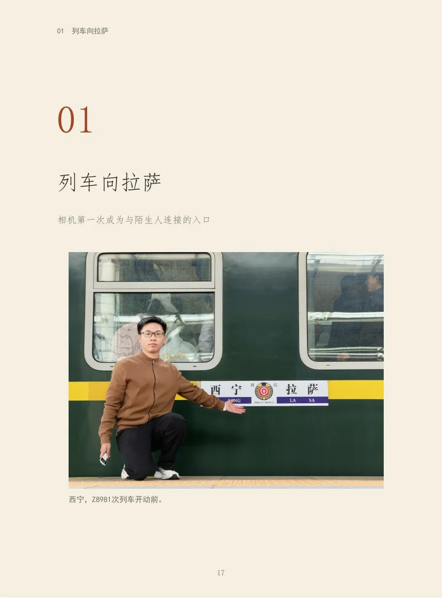
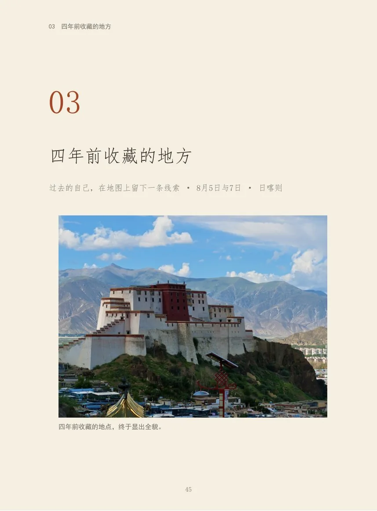
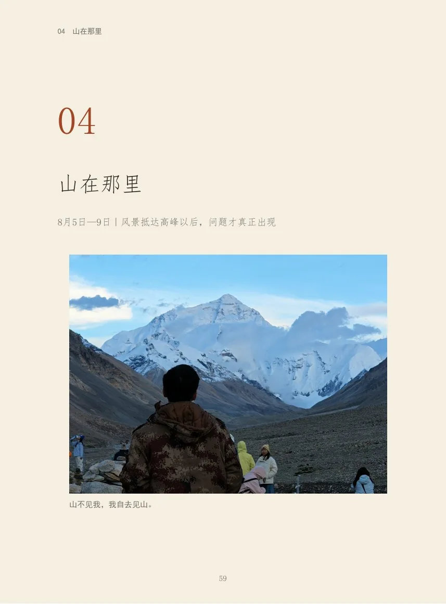
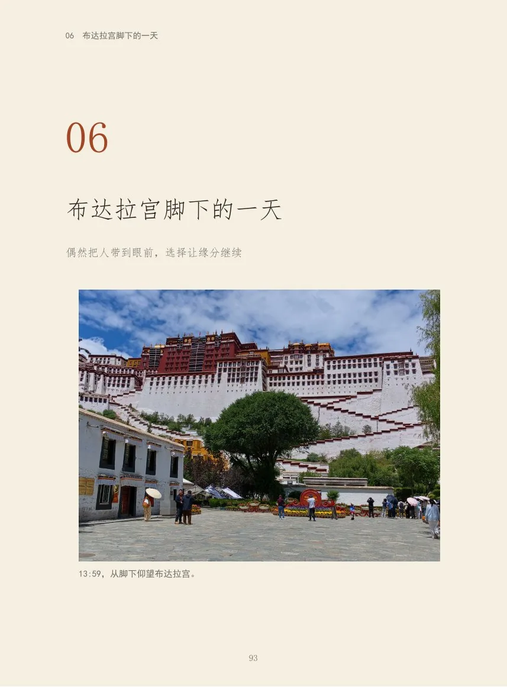
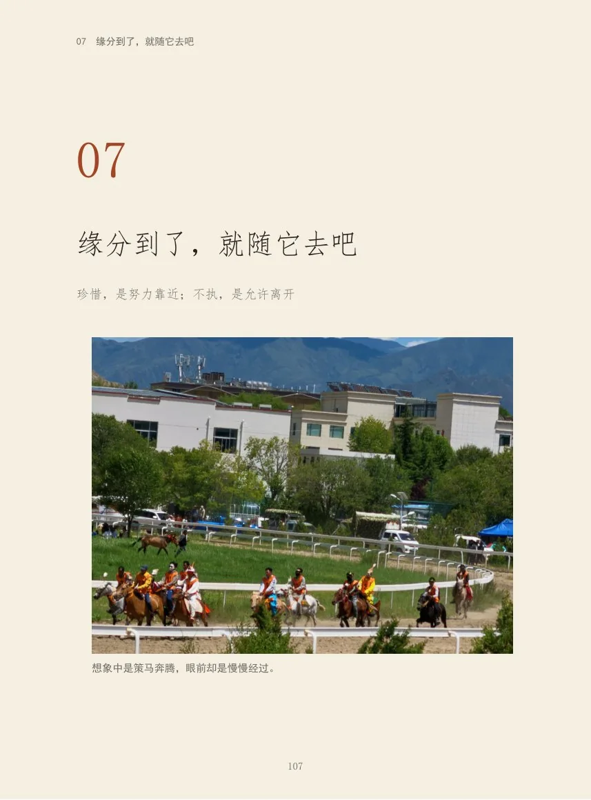
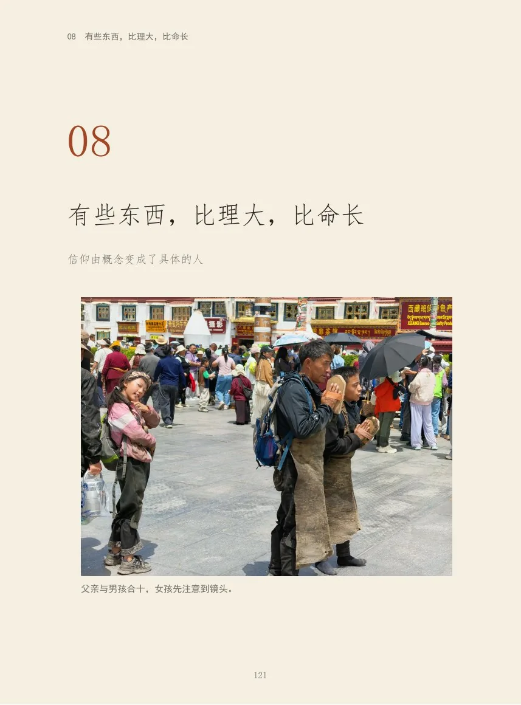
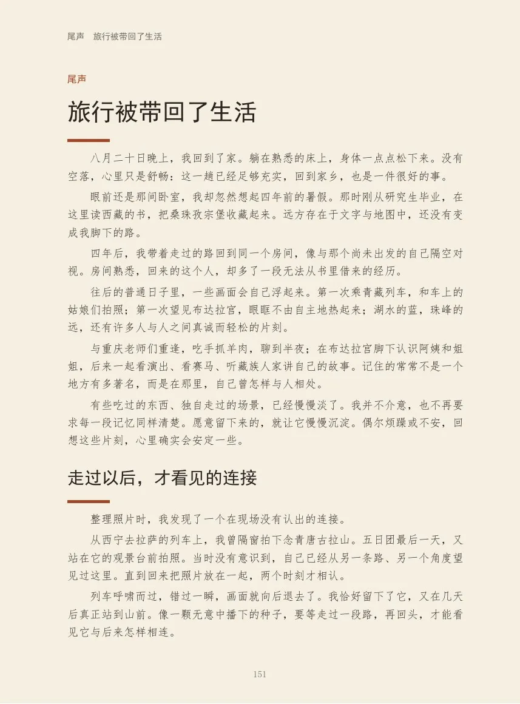